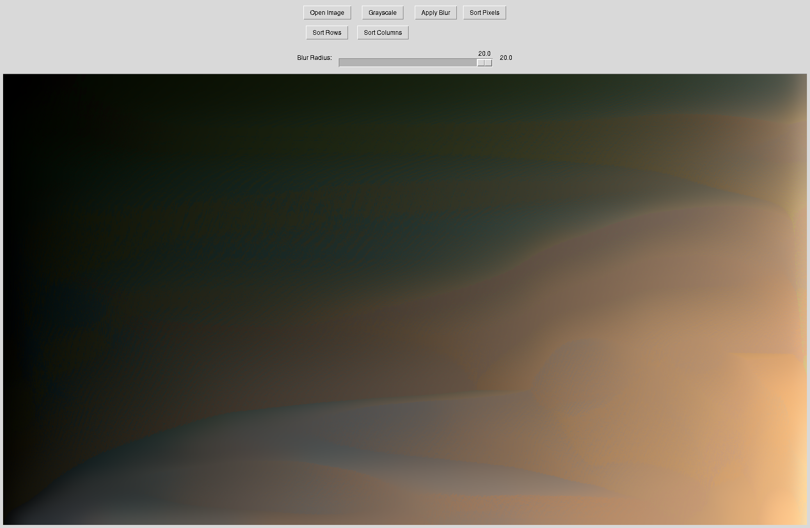

Python GUI for Image Processing#
Use your favorite LLM-System to write a python GUI that performs actions like
load an image
display the image
convert it to grayscale
sort it by color, hue, etc.
…
Below is an example with code.

import tkinter as tk
from tkinter import filedialog, Scale
from PIL import Image, ImageTk, ImageFilter
import numpy as np
class ImageProcessorApp:
def __init__(self, root):
self.root = root
self.root.title("Image Processor")
self.root.geometry("900x650") # Increased height for the slider
# Create a frame for buttons
self.button_frame = tk.Frame(root)
self.button_frame.pack(pady=5)
# Create buttons
self.open_button = tk.Button(self.button_frame, text="Open Image", command=self.open_image)
self.grayscale_button = tk.Button(self.button_frame, text="Grayscale", command=self.apply_grayscale)
self.blur_button = tk.Button(self.button_frame, text="Apply Blur", command=self.apply_blur)
self.sort_button = tk.Button(self.button_frame, text="Sort Pixels", command=self.apply_sort)
self.sort_row_button = tk.Button(self.button_frame, text="Sort Rows", command=self.apply_row_sort)
self.sort_column_button = tk.Button(self.button_frame, text="Sort Columns", command=self.apply_column_sort)
# Layout buttons in two rows to prevent overcrowding
self.open_button.grid(row=0, column=0, padx=5, pady=5)
self.grayscale_button.grid(row=0, column=1, padx=5, pady=5)
self.blur_button.grid(row=0, column=2, padx=5, pady=5)
self.sort_button.grid(row=0, column=3, padx=5, pady=5)
self.sort_row_button.grid(row=1, column=0, padx=5, pady=5)
self.sort_column_button.grid(row=1, column=1, padx=5, pady=5)
# Create a frame for the blur slider
self.slider_frame = tk.Frame(root)
self.slider_frame.pack(pady=5)
# Create blur radius slider
self.blur_label = tk.Label(self.slider_frame, text="Blur Radius:")
self.blur_label.grid(row=0, column=0, padx=5)
self.blur_slider = Scale(self.slider_frame, from_=0, to=20, orient=tk.HORIZONTAL,
length=300, resolution=0.5, command=self.on_slider_change)
self.blur_slider.set(2) # Default value
self.blur_slider.grid(row=0, column=1, padx=5)
# Create a label to show current blur value
self.blur_value_label = tk.Label(self.slider_frame, text="2.0")
self.blur_value_label.grid(row=0, column=2, padx=5)
# Create a frame for the canvas with resizing capability
self.canvas_frame = tk.Frame(root)
self.canvas_frame.pack(fill=tk.BOTH, expand=True, padx=5, pady=5)
# Create canvas for image display
self.canvas = tk.Canvas(self.canvas_frame, bg="gray")
self.canvas.pack(fill=tk.BOTH, expand=True)
# Bind the canvas resize event
self.canvas.bind("<Configure>", self.on_canvas_resize)
# Initialize image variables
self.original_image = None
self.current_image = None
self.tk_image = None
self.display_image_obj = None
def on_slider_change(self, value):
# Update the blur value label when slider changes
self.blur_value_label.config(text=f"{float(value):.1f}")
def on_canvas_resize(self, event):
# Redisplay the image when the canvas is resized
if self.current_image:
self.display_image(self.current_image)
def open_image(self):
file_path = filedialog.askopenfilename(
filetypes=[("Image files", "*.jpg *.jpeg *.png *.bmp *.gif *.tiff")]
)
if file_path:
self.original_image = Image.open(file_path)
self.current_image = self.original_image.copy()
self.display_image(self.current_image)
def display_image(self, image):
# Get current canvas dimensions
canvas_width = self.canvas.winfo_width()
canvas_height = self.canvas.winfo_height()
# Skip if canvas is too small
if canvas_width <= 1 or canvas_height <= 1:
return
# Calculate aspect ratio
img_width, img_height = image.size
ratio = min(canvas_width/img_width, canvas_height/img_height)
new_size = (int(img_width * ratio), int(img_height * ratio))
# Resize the image for display
display_image = image.resize(new_size, Image.Resampling.LANCZOS)
self.display_image_obj = ImageTk.PhotoImage(display_image)
# Clear canvas and display image
self.canvas.delete("all")
self.canvas.create_image(
canvas_width//2,
canvas_height//2,
anchor=tk.CENTER,
image=self.display_image_obj
)
def apply_grayscale(self):
if self.current_image:
grayscale_image = self.image_to_grayscale(self.current_image)
self.current_image = grayscale_image
self.display_image(self.current_image)
def image_to_grayscale(self, image):
# Convert image to grayscale
if image.mode != 'L':
return image.convert('L')
return image
def apply_blur(self):
if self.current_image:
# Get the current blur radius from the slider
blur_radius = self.blur_slider.get()
blurred_image = self.image_gaussian_blur(self.current_image, radius=blur_radius)
self.current_image = blurred_image
self.display_image(self.current_image)
def image_gaussian_blur(self, image, radius=2):
# Apply Gaussian blur to the image
return image.filter(ImageFilter.GaussianBlur(radius=radius))
def apply_sort(self):
if self.current_image:
sorted_image = self.image_sorted(self.current_image)
self.current_image = sorted_image
self.display_image(self.current_image)
def image_sorted(self, image):
# Convert image to RGB if it's not already
if image.mode != 'RGB':
image = image.convert('RGB')
# Convert to numpy array
img_array = np.array(image)
height, width, channels = img_array.shape
# Flatten the image array and sort by a specific criterion
# Here we'll sort by the sum of RGB values (brightness)
flattened = img_array.reshape(-1, channels)
# Calculate brightness for each pixel
brightness = np.sum(flattened, axis=1)
# Sort pixels by brightness
sorted_indices = np.argsort(brightness)
sorted_pixels = flattened[sorted_indices]
# Reshape back to original image dimensions
sorted_array = sorted_pixels.reshape(height, width, channels)
# Convert back to PIL Image
return Image.fromarray(sorted_array.astype('uint8'))
def apply_row_sort(self):
if self.current_image:
row_sorted_image = self.image_sorted_row(self.current_image)
self.current_image = row_sorted_image
self.display_image(self.current_image)
def image_sorted_row(self, image):
# Convert image to RGB if it's not already
if image.mode != 'RGB':
image = image.convert('RGB')
# Convert to numpy array
img_array = np.array(image)
height, width, channels = img_array.shape
# Process each row individually
for i in range(height):
# Get the current row
row = img_array[i, :, :]
# Calculate brightness for each pixel in the row
brightness = np.sum(row, axis=1)
# Sort the row by brightness
sorted_indices = np.argsort(brightness)
sorted_row = row[sorted_indices]
# Put the sorted row back
img_array[i, :, :] = sorted_row
# Convert back to PIL Image
return Image.fromarray(img_array.astype('uint8'))
def apply_column_sort(self):
if self.current_image:
column_sorted_image = self.image_sorted_column(self.current_image)
self.current_image = column_sorted_image
self.display_image(self.current_image)
def image_sorted_column(self, image):
# Convert image to RGB if it's not already
if image.mode != 'RGB':
image = image.convert('RGB')
# Convert to numpy array
img_array = np.array(image)
height, width, channels = img_array.shape
# Process each column individually
for j in range(width):
# Get the current column
column = img_array[:, j, :]
# Calculate brightness for each pixel in the column
brightness = np.sum(column, axis=1)
# Sort the column by brightness
sorted_indices = np.argsort(brightness)
sorted_column = column[sorted_indices]
# Put the sorted column back
img_array[:, j, :] = sorted_column
# Convert back to PIL Image
return Image.fromarray(img_array.astype('uint8'))
if __name__ == "__main__":
root = tk.Tk()
app = ImageProcessorApp(root)
root.mainloop()